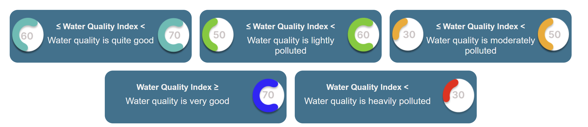
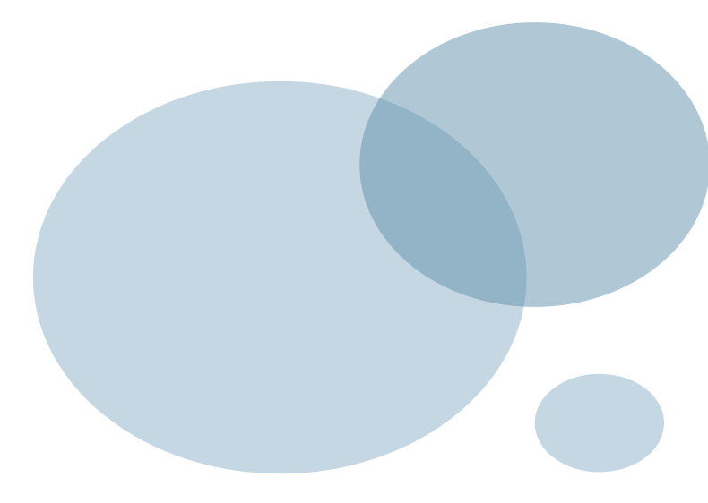
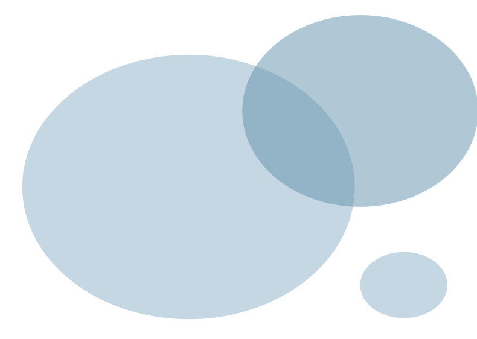
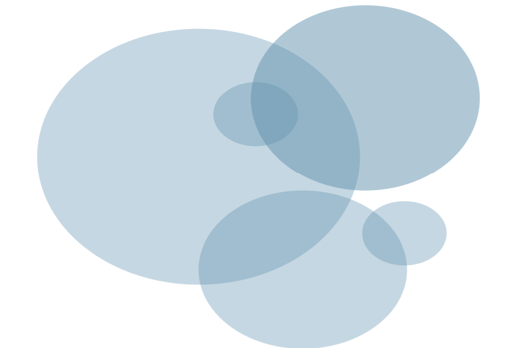
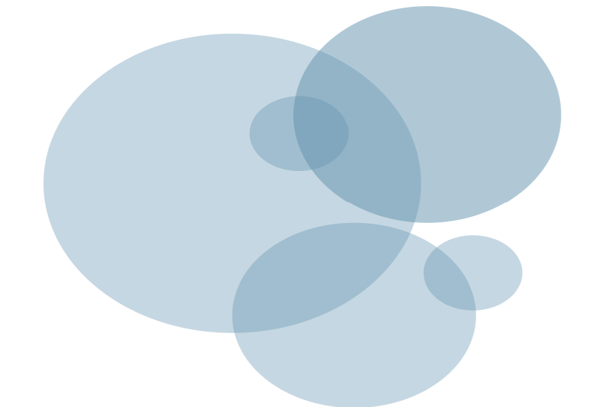

Water Guard
Your Guardian of Water
The Article
Get to know the characteristics of clean water according to
WHO that is safe to use
River water quality is one of the parameters in calculating the Environmental Quality Index (IKLH). The Water Quality Index is calculated from the Pollution Index (PI) conversion results. The IKA calculation is carried out based on the Decree of the Minister of Environment Number 115 of 2003 concerning Guidelines for Determining Water Quality Status. This calculation is based on the value of the sample results against the quality standards for each parameter.
Based on the Pij value, the level of pollution can be categorized.
Water quality status is described by the pollution index which is used to determine the level of pollution relative to permitted water quality parameters. The Pollution Index can provide input to decision makers so they can assess water quality and take certain actions to improve water quality. The results of river water measurements in Magetan Regency in 2019 were compared with PP RI Number 82 concerning Water Quality Management and Water Pollution Control for class III water quality standards. Class III water is water that can be used for cultivating freshwater fish, animal husbandry, water for irrigating plants, and/or other uses that require the same water quality as these uses. Calculation of the Water Pollution Index (Pij) in Magetan Regency is calculated using the concentration of water quality parameters listed in class II water quality standards.
Source 


Water is one of the main elements on Earth which is an inseparable part for all humans. Living things cannot live if there is no water, so water is needed to maintain the survival of living things.
Water in the human body really functions to replenish fluids in the body by drinking water. Apart from quenching thirst and other main benefits of water for the body, water also has other benefits that are really needed to support life.
One form of Clean and Healthy Living Behavior or PHBS is using clean water every day. Because water quality can affect health and daily life.
The water we use every day, such as drinking, cooking, bathing and so on, must be clean so that we can avoid diseases caused by poor water quality.
By using clean water we can avoid diseases such as diarrhea, cholera, dysentery, typhoid, worms, skin diseases and even poisoning. For this reason, it is mandatory for all family members to use clean water every day and maintain clean water quality in their environment.
Here are some tips for maintaining clean water quality in the environment.
1. Separate the distance between water sources, latrines and rubbish dumps at least 10 meters.
2. Spring water sources must be protected from pollutants.
3. Dug wells, pump wells, public taps and springs must be protected so that they are not damaged
4. The floor of the well should be watertight (plastered) and not cracked, the rim of the well and the walls of the well should be plastered and the well covered;
5. The water storage bucket is equipped with a lid and a ladle with a handle, and is kept clean.
6. The water must be kept clean with no puddles of water around the water source, and equipped with drainage channels, no dirt or moss on the floor/walls of the well.
SourceWater pollution occurs when water becomes contaminated with harmful substances, making it unsuitable for drinking, cooking, or other activities. Given the crucial role of water in daily life and its link to various health risks, preventing water pollution is essential.
Causes and Health Impacts of Water Pollution Various pollutants can contaminate water, typically originating from the following sources:
1. Household waste, such as food scraps, oil, plastics, or wastewater.
2. Industrial waste, like oil or chemical spills.
3. Agricultural runoff, including pesticides.
Contaminated water can carry harmful substances, bacteria, and parasites, leading to health issues. Common diseases caused by water pollution include:
1. Diarrhea: Often affects young children, caused by drinking or using contaminated water. It can lead to dehydration and malnutrition.
2. Cholera: An acute diarrheal illness caused by the bacteria Vibrio cholerae, spread through contaminated water. It's common in areas with poor water sanitation.
3. Typhoid Fever: Caused by the bacteria Salmonella typhi, transmitted through contaminated water. Poor access to clean water increases the risk.
4. Hepatitis A: An infection of the liver caused by the hepatitis A virus, spread through contaminated food and water. It can lead to acute liver failure.
5. Skin Irritation: Contaminated water can cause skin diseases and irritations from activities like bathing or washing clothes in polluted water.
6. Cancer: Long-term exposure to water contaminated with substances like arsenic, nitrates, or chromium can increase the risk of cancers, including stomach, kidney, and intestinal cancers.
 


Preventing Water Pollution
To reduce the impact of water pollution, practice clean and healthy living habits and take steps to ensure water quality:
1. Maintain a distance of at least 10 meters between household water sources and waste disposal areas.
2. Keep wells, pumps, taps, and other water sources clean, covered, and in good repair.
3. Avoid disposing of garbage and chemicals in water sources or drains.
4. Use water filters if necessary to ensure clean water for daily use.
5. Conserve water to help reduce pollution.
By taking these preventive measures, the risk of waterborne diseases can be minimized. If you experience symptoms like diarrhea, vomiting, fever, or stomach cramps after consuming unknown or unclean water, see a doctor to determine the cause and receive appropriate treatment.
Source